Using Trelliscope Functions with pmartR
David Degnan, Kelly Stratton, Lisa Bramer
2024-05-13
Source:vignettes/Trelliscope_Vignette.Rmd
Trelliscope_Vignette.RmdIntroduction
A challenge of ’omics data is seeing trends on the biomolecule, sample, and biomolecule class (i.e. peptide fragments from a protein) level due to the large number of individual plots to visualize. Trelliscope is an HTML tool which allows users to search, sort, and filter plots based on cognostics, which include single data descriptors of the data like the mean, standard deviation, p-value, etc.
The general workflow for the trelliscope builder functions in pmartR are as follows:
- build the trelliscope data object with an e_data file, omicsData
object, statRes object, or both an omicsData and statRes object.
(
as.trelliData.edataoras.trelliData)
Note: The e_data file is an unprocessed expression matrix. The omicData object is a pepData, proData, lipidData, etc., object that has completed normalization if required. The statRes object contains the statistics results following an imd-ANOVA.
select the variable to panel the data by (
trelli_panel_by)and finally, pass to the corresponding trelliscope building functions
Currently, abundance, missingness, and fold change plots are supported, and can be summarized as follows:
## Input Data Plot Type Uses e_data Uses omicsData Uses statRes
## 1 Abundance Boxplot X X
## 2 Abundance Histogram X X
## 3 Abundance Heatmap X
## 4 Missingness Barplot X X X
## 5 Fold Change Barplot X
## 6 Fold Change Boxplot X
## 7 Fold Change Volcano X
## 8 Fold Change Heatmap X
## Requires Biomolecule Class (e_meta) Main Effects Used
## 1 X
## 2
## 3 X X
## 4 X
## 5 X
## 6 X X
## 7 X
## 8 Xwhere “Input Data” is the type of data that will be plotted and “Plot
Type” describes what kind of plot would be generated in the trelliscope.
“Uses e_data” describes plots that can be made with just an e_data
object using the as.trelliData.edata function. Similarly,
“Uses omicsData” describes plots that can be made with an omicsData
object (pepData, proData, lipidData, nmrData, etc.) in the
as.trelliData function. “Uses statRes” describes plots that
can be built with a statRes object in as.trelliData;
however, most of these plots “Require e_meta” from omicsData to
determine trelliscope panels. The last column, “Main Effects used”
describes any plot where the “main_effects” parameter in
pmartR::group_designation plot was set.

Example Case 1: e_data Only
Let’s start with the simplest input data to run these trelliscope functions, e_data. For context, a typical e_data file looks like this:
## Peptide Sample_20_Phenotype3_A Sample_33_Phenotype3_A
## 1 AAAAAAAAAAGAAGGR NA NA
## 2 AAAAAAALQAK NA NA
## 3 AAAAAEQQQFYLLLGNLLSPDNVVR NA 27154000
## 4 AAAAAGTATSQR 36119000 39205000
## 5 AAAAELSLLEK NA NA
## 6 AAAAVGAGHGAGGPGAASSSGGAR 12026000 6319800
## Sample_49_Phenotype3_A Sample_47_Phenotype3_A Sample_50_Phenotype3_B
## 1 NA NA NA
## 2 NA NA NA
## 3 19001000 NA NA
## 4 43322000 40862000 31594000
## 5 NA NA NA
## 6 26133000 27810000 NAwhere each of the rows are biomolecules and each of the columns are
samples. Within each e_data file, there must be one identifier column
referred to as the “edata_cname.” The rest of the columns contain
samples. With the exception of isobaric peptide data and nmr data, all
data types must be log transformed and normalized. After setting the
e_data and edata_cname parameters in the
as.trelliData.edata function, the next step is to set the
omics_type which are all currently supported pmartR omics types. Set a
transformation by first reporting the original data scale in the
data_scale_original and the desired scale in data_scale. “log2”,
“log10”, “log”, and “abundance” (no transformation) are currently
supported.
To understand the array of normalization functions and parameters,
see ?normalize_global, ?normalize_loess and
?normalize_quantile. Below, we have an example of valid log
transformation and normalization parameters.
trelliData1 <- as.trelliData.edata(
e_data = pmartRdata::pep_edata,
edata_cname = "Peptide",
omics_type = "pepData",
data_scale_original = "abundance",
data_scale = "log2",
normalization_fun = "global",
normalization_params = list(
subset_fn = "all", norm_fn = "median", apply_norm = TRUE,
backtransform = TRUE
)
)After creating a trelliData object, the next step is to determine
which variable to panel the data by. The ?summary function
provides a quick overview of potential plots that can be made.
summary(trelliData1)## Panel By Choice Plot Number of Plots
## <char> <char> <char>
## 1: Peptide abundance boxplot 21329
## 2: Peptide abundance histogram 21329
## 3: Peptide missingness bar 21329
## 4: Sample abundance boxplot 24
## 5: Sample missingness bar 24With only an e_data file, there are only two potential options for
panel by variables, which include the edata_cname (in this case,
Peptide), and a “Sample” category which is comprised of the name of
every column besides edata_cname. The plot, which corresponds to the
table in the introduction, can be further investigated with adding
trelli and underscores to the name. For example, the “abundance boxplot”
details be viewed with ?trelli_abundance_boxplot. The last
column tells you the number of plots that can be made with that
trelliscope function. Note that trelliscopes of more than 1,000 plots
can take several minutes to be made.
To set the panels for the trelliscope, use the
?trelli_panel_by function. We only have two options in this
case, so a summary for plots where each panel is the biomolecule
(edata_cname = “Peptide”) looks like this:
summary(trelliData1 %>% trelli_panel_by("Peptide")) ## Panel By Choice Plot Number of Plots
## <char> <char> <num>
## 1: Peptide abundance boxplot 21329
## 2: Peptide abundance histogram 21329
## 3: Peptide missingness bar 21329which is the above table subsetted down to the only options available to plot right now. The typical trelliscope parameters look like this:
## Parameter Name
## 1 cognostics
## 2 ggplot_params
## 3 interactive
## 4 path
## 5 name
## 6 test_mode
## 7 test_example
## 8 single_plot
## Description
## 1 Set the specific cognostics of the trelliscope. Varies per plotting function.
## 2 Pass parameters to the ggplot functions as a list of strings
## 3 Indicate whether plots should be interactive or not
## 4 The path where the trelliscope will be outputted to
## 5 Name of the trelliscope display
## 6 Indicate whether the trelliscope should be subsetted to a few panels or not
## 7 The panels to subset the trelliscope to if test_mode is true
## 8 Output a single plot instead of a trelliscope displaySee an example of how to use one of these functions below, with test_mode enabled.
trelli_abundance_boxplot(
trelli_panel_by(trelliData1, "Peptide"),
cognostics = c("count", "mean abundance", "cv abundance"),
include_points = TRUE,
name = "Trelliscope",
test_mode = TRUE,
test_example = 3
)Also, see “How Do I Change ggplot Parameters?” below to understand how to change axis and title labels, sizes, and angles, as well as change plot colors, etc. All plotting commands follow the ggplot2 library of functions. To see what each trelliscope looks like, start by investigating the default plot option with single_plot = TRUE and selecting a specific plot with test_example.
Abundance Boxplot
Let’s first create two panel_by trelliscope objects, one by “Lipid”, and the other by “Sample”. If we were to plot the first sample’s boxplot abundance with include_points = TRUE, we would get too many points to view. Thus, set include_points to FALSE. Since we’ve set “single_plot” to TRUE, we get an example of one of the many plots that will be made and passed to trelliscope. We can change which plot we’re looking at with “test_example”. On the left, we have a “Peptide” example and on the right, a “Sample” example, with the color changed to avoid confusion.
# Panel by Mass Tag ID
PeptideGroups <- trelli_panel_by(trelliData1, "Peptide")
# Panel by Sample
SampleGroups <- trelliData1 %>% trelli_panel_by("Sample")
# Create an example boxplot
Abun_Box_Edata <- trelli_abundance_boxplot(PeptideGroups, single_plot = TRUE, test_example = 3)
# Make an abundance boxplot without the points
Abun_Box_Sample <- trelli_abundance_boxplot(SampleGroups, include_points = F, single_plot = T,
ggplot_params = "scale_fill_manual(values = 'forestgreen')")
# Use patchwork to put plots together
Abun_Box_Edata + Abun_Box_Sample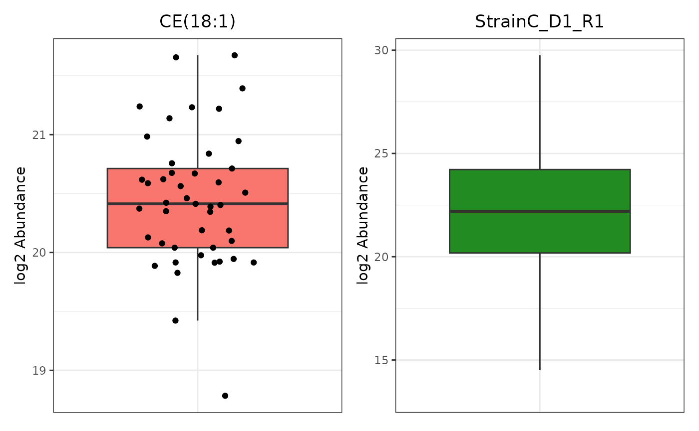
Abundance Histogram
The abundance histogram is only supported for data that has been paneled by edata_cname.
trelli_abundance_histogram(PeptideGroups, single_plot = TRUE, test_example = 3)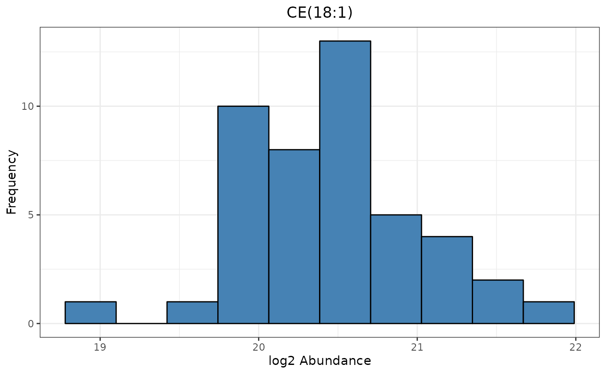
Missingness Barplot
We can also build a missingness bar plots. If we would rather see count information in the bar plot instead of proportions, we can easily set proportion to FALSE.
# Create an example bar plot
Miss_Bar_Edata <- trelli_missingness_bar(PeptideGroups,
single_plot = TRUE, test_example = 3,
ggplot_params = "ggtitle('Biomolecule')")
# Make a missingness barplot
Miss_Bar_Sample <- trelli_missingness_bar(SampleGroups,
include_points = F,
proportion = FALSE, single_plot = T,
ggplot_params = "ggtitle('Sample')")
# Put plots together with patchwork
Miss_Bar_Edata + Miss_Bar_Sample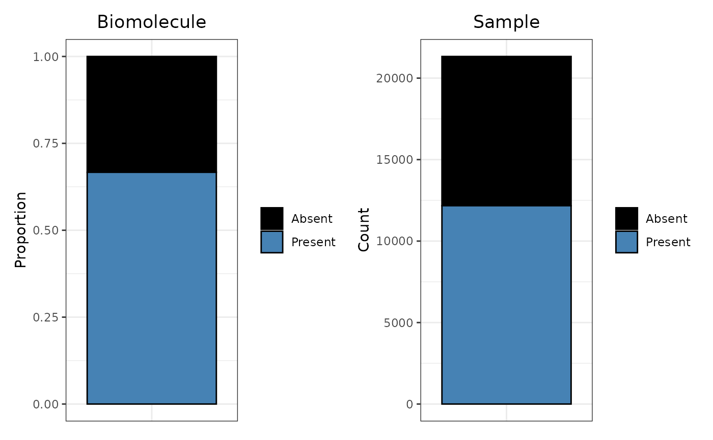
These are all the currently supported plots for only e_data files. There are more options for omicsData and statRes listed below.
Example Case 2: omicsData Only
An omicsData object that is log transformed and normalized (with the
exception of isobaric and nmr data) can be passed to the
as.trelliData function which requires either an omicsData
or statRes object.
# Pull the example peptide object
peptide <- pmartRdata::pep_object
# Log transform the edata file
peptide <- edata_transform(omicsData = peptide, data_scale = "log2")
# Set the group designation main effects
peptide <- group_designation(omicsData = peptide, main_effects = "Phenotype")
# Filter the data to run the imd_anova
imdanova_Filt <- imdanova_filter(omicsData = peptide)
peptide <- applyFilt(filter_object = imdanova_Filt, omicsData = peptide, min_nonmiss_anova=2)
# Normalize the data. You may use the Kruskal-Wallis test from normRes_tests to
# confirm that your normalization choice does not induce nor remove significance.
peptide <- normalize_global(peptide, subset_fn = "rip", norm_fn = "median",
apply_norm = TRUE, backtransform = TRUE)
# Create trelliData object
trelliData2 <- as.trelliData(omicsData = peptide)If we summarize the plot options with summary, we
get:
summary(trelliData2)## Panel By Choice Plot Number of Plots
## <char> <char> <char>
## 1: Peptide abundance boxplot 17200
## 2: Peptide abundance histogram 17200
## 3: Peptide missingness bar 17200
## 4: SampleID abundance boxplot 24
## 5: SampleID missingness bar 24
## 6: ProteinList, RazorProtein abundance boxplot 3230, 2650
## 7: ProteinList, RazorProtein abundance heatmap 3230, 2650
## 8: ProteinList, RazorProtein missingness bar 3230, 2650Since we included an e_meta object that has categorical data for e_data, there are a lot more plotting options available then what was provided for the e_data file. Additionally, we have provided grouping information with the “group_designation” function which will be incorporated into some of the plotting functions. Since we’ve already covered the trelliscope building functions, we will focus these next few sections on how each e_meta and group_designation affect each plot.
Abundance Boxplot
The group_designation variables are utilized in the abundance boxplot when paneling by edata_cname (“Peptide”)…
trelliData2 %>%
trelli_panel_by("Peptide") %>%
trelli_abundance_boxplot(test_example = 3, single_plot = T, ggplot_params = "xlab('Phenotype')")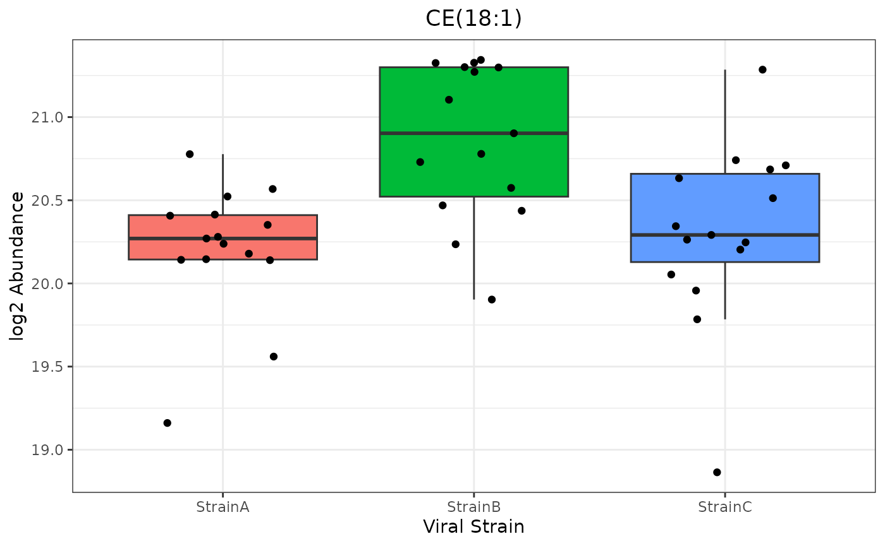
…or by an e_meta variable. In this case, our options include RazorProtein and ProteinList. Note that group_designation is used if included:
trelliData2 %>%
trelli_panel_by("RazorProtein") %>%
trelli_abundance_boxplot(test_example = 3, single_plot = T)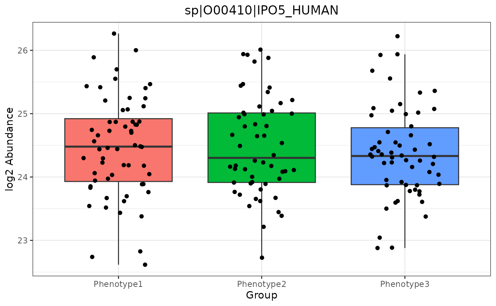
If we panel by the sample, the plot remains the same as in example case 1.
Abundance Histogram
Since group_designation is not used in the histogram trelliscope plotting function, it remains the same as in Example Case 1.
Missingness Bar
Once again, group_designation data is used if included, even if the panel_by variable is an e_meta variable.
trelliData2 %>%
trelli_panel_by("Peptide") %>%
trelli_missingness_bar(test_example = 3, single_plot = T)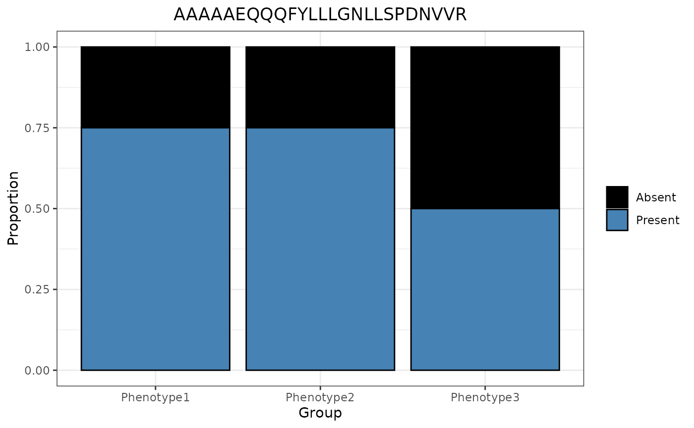
Abundance Heatmap
An advantage to including e_meta variables is the ability to use heatmaps, where each panel is an e_meta variable, one axis is the biomolecules within that biomolecule class, and the other axis is the samples in order by the “group_by” designation.
trelliData2 %>%
trelli_panel_by("RazorProtein") %>%
trelli_abundance_heatmap(test_example = 2, single_plot = T, ggplot_params = "coord_flip()")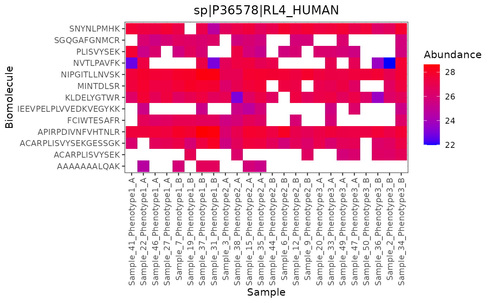
Example Case 3: statRes Only
Including statRes data allows for trelliscope plots that accept
fold_change values. To get a statRes object, pass your transformed,
filtered, and normalized data to the ?imd_anova
function.
# Run an imd-anova
pepStats <- imd_anova(peptide, test_method = "anova")
# Pass that dataframe to the trelliData object builder
trelliData3 <- as.trelliData(statRes = pepStats)
# Run the summary function
summary(trelliData3)## Panel By Choice Plot Number of Plots
## <char> <char> <char>
## 1: Peptide missingness bar 17200
## 2: Peptide fold change bar 17200There are only two trelliscope plotting options for statRes objects by themselves. The missingness plot, which we have seen above, and a fold change bar plot. Fold change plots have an additional parameters: p_value_thresh, which allows users to set a significance threshold.
Foldchange Bar
trelliData3 %>%
trelli_panel_by("Peptide") %>%
trelli_foldchange_bar(p_value_thresh = 0.05,
test_example = 10, single_plot = TRUE)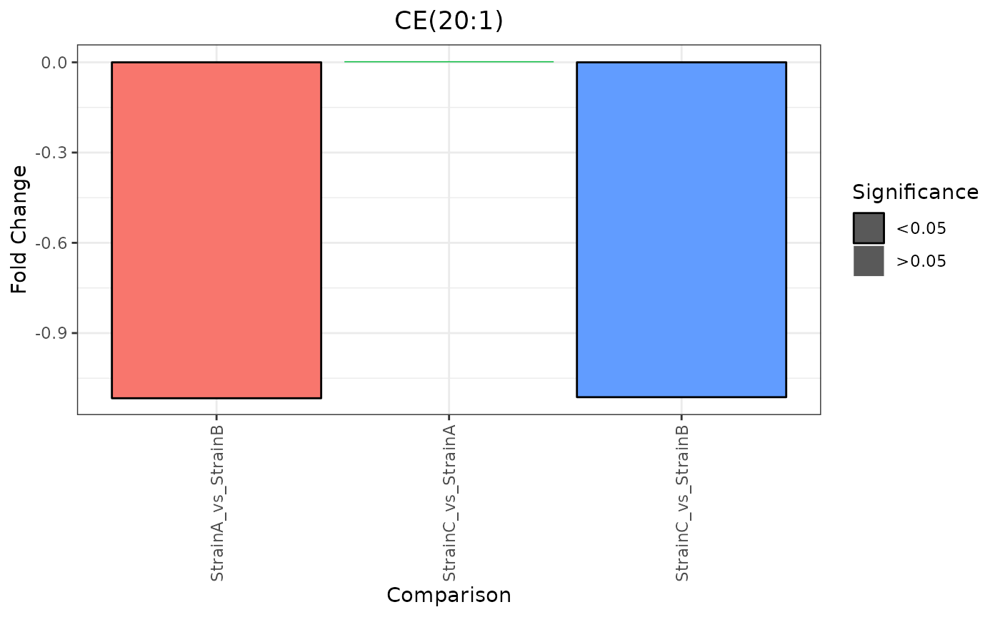
To see more fold change plot options, include an e_meta dataframe in the trelliData object.
Example Case 4: omicsData and statRes
Including both omicsData and statRes objects allows users the ability to run all available plotting functions. Below, we will focus on the last fold change plots that we have yet to see.
# Build a trelliData object with both omicsData and statRes
trelliData4 <- as.trelliData(omicsData = peptide, statRes = pepStats)
summary(trelliData4)## Panel By Choice Plot Number of Plots
## <char> <char> <char>
## 1: Peptide abundance boxplot 17200
## 2: Peptide abundance histogram 17200
## 3: Peptide missingness bar 17200
## 4: Peptide fold change bar 17200
## 5: SampleID abundance boxplot 24
## 6: SampleID missingness bar 24
## 7: ProteinList, RazorProtein abundance boxplot 3230, 2650
## 8: ProteinList, RazorProtein abundance heatmap 3230, 2650
## 9: ProteinList, RazorProtein missingness bar 3230, 2650
## 10: ProteinList, RazorProtein fold change boxplot 3230, 2650
## 11: ProteinList, RazorProtein fold change heatmap 3230, 2650
## 12: ProteinList, RazorProtein fold change volcano 3230, 2650Fold Change Boxplot
To create a fold change boxplot, the input data must be paneled by an e_meta variable.
trelliData4 %>%
trelli_panel_by("RazorProtein") %>%
trelli_foldchange_boxplot(
single_plot = TRUE,
test_example = 2
)
Fold Change Heatmap
These heatmaps shows fold change values per biomolecule (y-axis) and statistical comparison (x-axis).
trelliData4 %>%
trelli_panel_by("RazorProtein") %>%
trelli_foldchange_heatmap(
single_plot = TRUE,
test_example = 2
)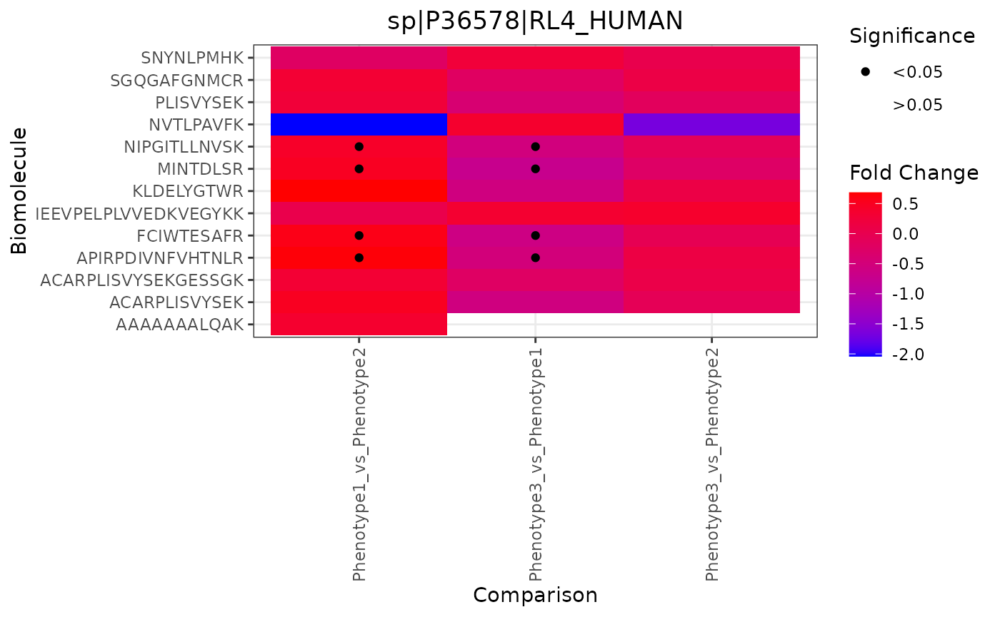
Fold Change Volcano
Volcano plots display the -log10 p-value versus the fold change values. Significant values with a low fold change are colored blue, and high ones are colored red. These plots require that a specific comparison is selected.
trelliData4 %>%
trelli_panel_by("RazorProtein") %>%
trelli_foldchange_volcano(
comparison = "Phenotype3_vs_Phenotype2",
test_example = 2,
single_plot = TRUE
)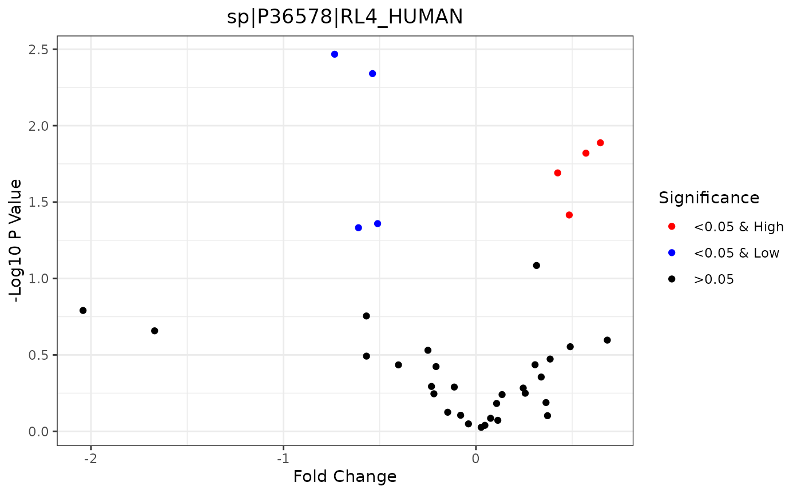
How Do I…
Change ggplot parameters
To make tweaks to the ggplot objects, pass the commands as strings in a list. For example:
trelliData2 %>%
trelli_panel_by("Peptide") %>%
trelli_abundance_boxplot(test_example = 3, single_plot = T,
ggplot_params = c("ggtitle('CYC Human')",
"ylab('Log Adjusted Abundance')",
"xlab('')", "theme_classic()",
"theme(plot.title = ggplot2::element_text(hjust = 0.5))",
"theme(legend.position = 'none')")
)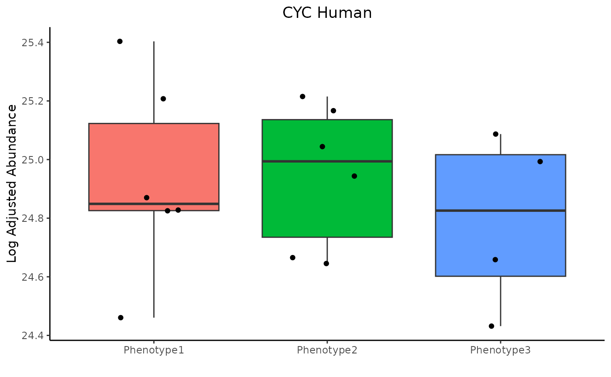
Below is the a list of common functions and what they do.
## Function Purpose
## 1 xlab('Name') Rename x-axis label
## 2 ylab('Name') Rename y-axis label
## 3 ggtitle('Name') Rename plot
## 4 xlim(c(0,1)) Set the x-axis limits
## 5 ylim(c(0,1)) Set the y-axis limits
## 6 coord_flip() Flip x- and y-axis
## 7 theme(axis.title.x = ggplot2::element_text(size=16)) Resize x-axis title
## 8 theme(axis.title.y = ggplot2::element_text(size=16)) Resize y-axis title
## 9 theme(axis.text.x = element_text(size=12)) Resize x-axis ticks
## 10 theme(axis.text.y = element_text(size=12)) Resize y-axis ticks
## 11 theme(axis.text.x = element_text(angle=90)) Rotate x-axis ticks
## 12 theme(axis.text.y = element_text(angle=90)) Rotate y-axis ticks
## 13 theme(plot.title = element_text(size=30)) Change plot title sizeFor a list of other ggplot functions, click here
Make the plot interactive
Every plot has an interactive option by making interactive=TRUE.
trelliData2 %>%
trelli_panel_by("Peptide") %>%
trelli_abundance_boxplot(test_example = 3, single_plot = T, interactive = T)Change cognostics
Every trelliscope plotting function has default diagnostics that can
be changed or removed completely by setting cognostics to “NULL”. For
example, if you were using the “trelli_abundance_boxplot” and only
wanted a mean and median cognostic, you could set cognostics to
c("mean abundance", "median abundance").
## Functions
## 1 trelli_abundance_boxplot
## 2 trelli_abundance_histogram
## 3 trelli_abundance_heatmap
## 4 trelli_missingness_bar
## 5 trelli_foldchange_bar
## 6 trelli_foldchange_boxplot
## 7 trelli_foldchange_heatmap
## 8 trelli_foldchange_volcano
## Cognostics
## 1 count, mean abundance, median abundance, cv abundance, anova p-value, fold change
## 2 sample count, mean abundance, median abundance, cv abundance, skew abundance
## 3 sample count, mean abundance, biomolecule count
## 4 total count, observed count, observed proportion, g-test p-value
## 5 fold change, anova p-value
## 6 biomolecule count, proportion significant, mean fold change, sd fold change
## 7 biomolecule count, proportion significant, mean fold change, sd fold change
## 8 biomolecule count, proportion significant, proportion significant up, proportion significant downOther FAQs
When is log transformation and normalization required?
For every e_data and omicsData object that is not isobaric proteomics or NMR data, log transformation and normalization is required.
How can I see my “panel_by” options?
“panel_by_options” are stored attributes in all trelliData objects.
attr(trelliData4, "panel_by_options")## [1] "Peptide" "SampleID" "ProteinList" "RazorProtein"